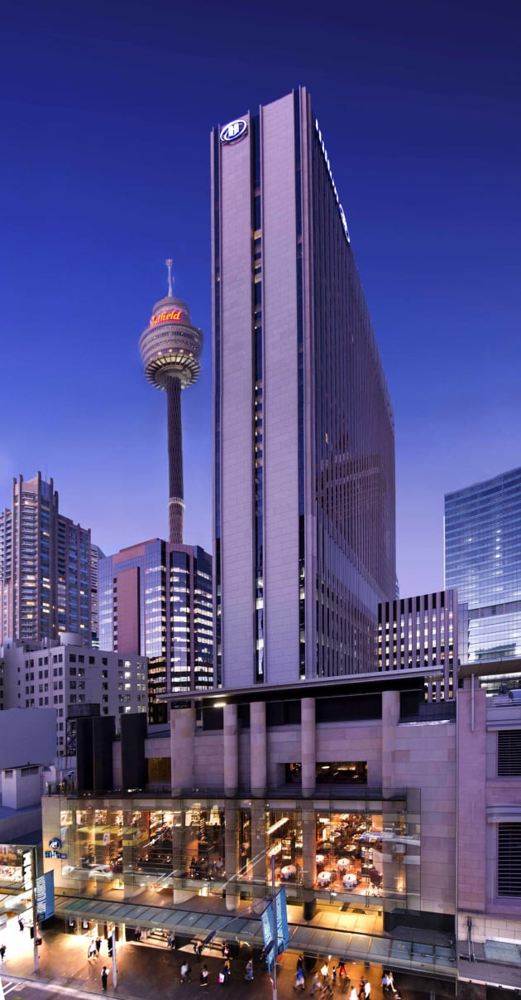

Sydney photos
Gateway plaza
Macquarie Place (also known as Gateway Plaza) is an iconic Sydney skyscraper on Macquarie Place in Central Business District of Sydney, Australia. Designed by architect Peddle, Thorp & Walker, the blue glass-clad commercial office building reaches 46 storeys or 164 metres (538 ft) to the top of its spire, and it is very prominent on the Circular Quay waterfront. The tower contains about 470,000 square feet (44,000m²) of office space.

Governor philip tower
he Governor Phillip Tower, the Governor Macquarie Tower, and the Museum of Sydney are the main elements of one of the largest developments in the central business district of Sydney, New South Wales, Australia. Completed in 1994, the property development complex occupies an elevated site in the north-east area of the central business district. The complex incorporates the site of the first Government House, one of Australia's earliest and most significant sites of European heritage. The address is 1 Farrer Place, Sydney. Designed by architects Denton Corker Marshall and built by Australia's largest privately owned construction company Grocon, at the time of its completion it was regarded as achieving new standards for Sydney commercial architecture in terms of finish quality and design.

Aurora place
Aurora Place is an office skyscraper and residential block on Macquarie Street in Sydney, Australia. Designed by Renzo Piano, the 41-storey building stands at a height of 218 m (715 ft) high to the top of the spire and 188 m (617 ft) to the roof. The building has an unusual geometric shape where not one panel is parallel to any grid. The east façade bulges out slightly from its base, reaching its maximum width at the top floors. The curved and twisted shape of east façade is aimed to correspond spatially with Sydney Opera House and to represent the sublime marine environment of the harbour. The exterior glass curtain-wall extends beyond the main frame, creating an illusion of its independence. The steel spire attached to the north facade is 75 metres in length. Uniquely for an office building of its size and age, Aurora Place features a number of winter gardens, providing natural environments for the building's tenants. These winter gardens are located in the North West and South East corners of the tower floor place, facing Sydney Harbour and the adjacent botanical gardens, with sophisticated operable louvre facades.
1 Bligh street tower
The premium grade office tower/ 1 bligh street tower was designed by Ingenhoven Architects of Germany and Architectus of Australia. It is an ecologically sustainable development and was awarded six-star green status by the Green Building Council of Australia. Green features include a basement sewage plant that recycles 90 percent of the building waste water, solar panels on the roof and air conditioning by chilled beams. It is Australia's first major high-rise building with a full double-skin façade with external louvres. These conserve energy, eliminate sky glare and optimise user comfort. The angle of the louvre blades is automatically adjusted according to their orientation to the sun. A naturally ventilated, full height atrium, on the southern side of the building, maximises natural light to each office level. The building also houses a childcare centre, two cafés and a basement car park for 96 cars. The large-scale aluminium sculpture at the top of the curving steps at the entrance on the corner of Bligh and O'Connell streets is by New York-based Australian James Angus. The developers describe it as "a complex network of three-dimensional ellipsoidal surfaces drawn from shapes expressed in the design of the building", adding that its brightly painted colour scheme traces the underlying geometry of the sculpture.
25 Martin place
25 Martin Place (formerly the MLC Centre) is a skyscraper in Sydney, Australia. Designed by architect Harry Seidler, it stands at a height of 228 metres (748 ft) with 67 storeys, and remains one of his most definitive works. The building was awarded the Sir John Sulman Medal by the Australian Institute of Architects. Originally named the "MLC Centre" after MLC Limited, and still commonly referred to by that name, in 2021 the name was removed by its owner, Dexus, which now refers to the building simply by its street address of 25 Martin Place. The building is a stark white, modernist column in an octagonal floorplan, with eight massive load-bearing columns in the corners that taper slightly towards the top. It is one of the world's tallest reinforced concrete buildings and was one of the tallest buildings in the world outside North America at the time of its completion. The MLC Centre was Sydney's tallest office building from 1977 to 1992. The MLC Centre is wholly owned by Dexus, which acquired a half-stake in the property from the Queensland Investment Corporation in June 2017 and bought out its former co-owner, the GPT Group, in March 2019. The MLC Centre was also Australia's tallest building for nine years until losing the title to the Rialto Towers in Melbourne in 1986. Occupants include the Sydney Consulate of the United States of America. The podium of the building includes a shopping centre and a 1,186-seat theatre, the Theatre Royal. The building underwent a $100m repair project which installed hybrid corrosion protection to the facade. The project retained the original appearance of the structure but remedied damage to exposed aggregate precast concrete facade panels caused by expansive corrosion of steel reinforcement. In June 2021, it was rebranded from the MLC Centre to 25 Martin Place.

Hilton sydney
hilton Sydney Hilton Hotels & Resorts (formerly known as Hilton Hotels) is a global brand of full-service hotels and resorts and the flagship brand of American multinational hospitality company Hilton. The original company was founded by Conrad Hilton. As of December 30 , 2019, there were 584 Hilton Hotels & Resorts properties with 216,379 rooms in 94 countries and territories across six continents.This includes 61 properties that are owned or leased with 219,264 rooms, 272 that are managed with 119,612 rooms, and 251 that are franchised with 77,451 rooms. In 2020, Fortune magazine ranked Hilton Hotels & Resorts at number one on their Fortune List of the Top 100 Companies to Work For in 2020 based on an employee survey of satisfaction.
Citigroup centre
Citigroup Centre is a 243-metre (797 ft) skyscraper located on Park Street, Sydney, New South Wales, Australia. The building draws its name from Citigroup Australia who is the anchor tenant. The building is one of the tallest buildings in Australia, however upon completion in 2000 it was the 8th tallest. Citigroup Centre is also the second-tallest building in the city when measured to its spire. The architect was Crone and Associates. The building has 41 levels of office space, 5 levels of underground parking and four levels of commercial space known as "The Galeries", An underground retail arcade connects the lower ground floor to Town Hall station and the Queen Victoria Building. The building is jointly owned and managed by the Charter Hall and GPT Group.
Museum towers
its official name is the museum towers it's a 34 story skyscraper with a height of 107 meters. it has been completed in 1988 it is build in sydney , australia. the adress is 267 castlereagh street and its used for appartments
North apartments
The North Apartments, located at 91 Goulburn Street, Sydney, Australia, were designed by the late architect Harry Seidler. Constructed between 2003–04, the building is oriented with a single façade to the North, facing Goulburn Street. Each of the 49 apartments features a wave-shaped balcony, so as to accommodate outdoor furniture, at its widened part. The balconies are arranged in a vertically staggered pattern so as to maximise the spatial feeling. As a result, the design breaks away from the usual box-like structures associated with 'infill' development. Colour is introduced into the façade by the use of integrally permanent coloured toughened glass on the balconies' end rails and dividing screens. There are a mixture of primary and neutral coloured accents all over the façade, giving the building a lively appearance. The apartments are designed following a split-level planning system, which results in a ceiling height of 2.85 m over the living area and 2.7 m in the raised bedrooms. These raised bedrooms have no windows, and open onto the lounge area. The building contains commercial space on the ground floor, and an indoor lap pool. The foyer of the building features a wall hanging of woven carpet, based on a wall mural in Rose Seidler House, painted by Seidler in 1950.
First route